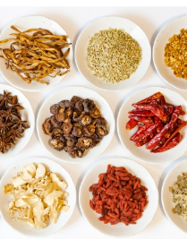
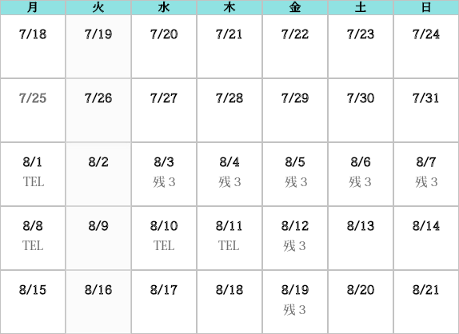

Medical
Herb
Cafe+


The atmosphere
of the shop
当店は薬膳メニューを ご用意しております。 薬膳とは中国医学基づいたもので、 食物がもつ薬に近い作用を お料理と組み合わせたお食事のことです。 ベジタリアンの方にもピッタリ♪ 健康を気遣われる方 には是非ともオススメな お食事ですので、近くにお越し の際はお立ち寄りくださいませ。
Reservation
Status

Information
- 2022.07.23 新店舗が名護市にNEW! OPENいたしました。
- 2022.07.15 明日は土曜日美容鍼感謝DAY
- 2022.06.10 5名様限定!!アーユルヴェーダの施術時間 を10分無料延長致します
- 2022.05.20 本日10食限定豚の角煮セット!!サラダスープご飯もいて 750円!
- 2022.04.01 臨時休業のお知らせ
もっと見る